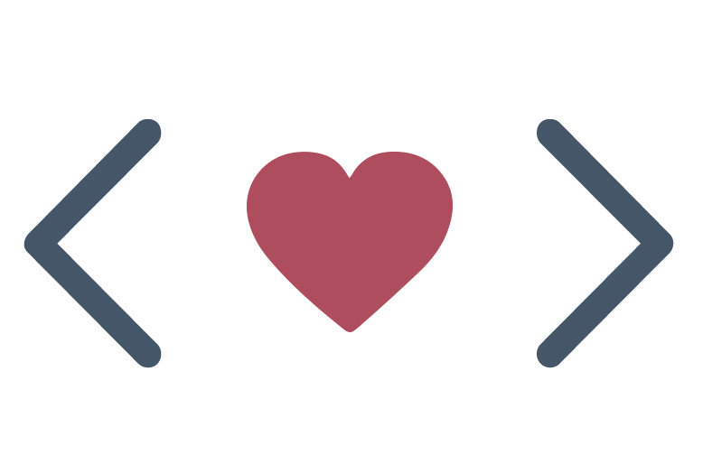

Skills you need when you want to learn to write (good) code and find your way into technology.
Here are some things I think are important in order for someone to get good at coding who is starting from zero. Read more >>

Things I learned from organising a non-profit tech conference in my free time
The backstory to the IntoTech conference 2017 and tips on how to organize a free, volunteer-based conference-style event. Read more >>